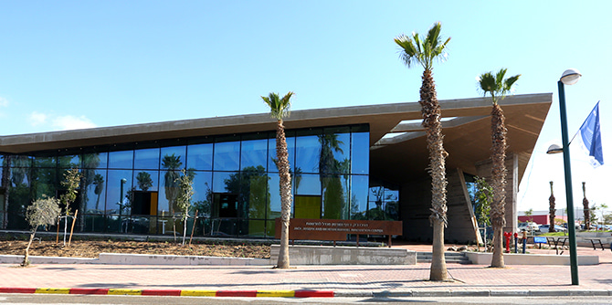
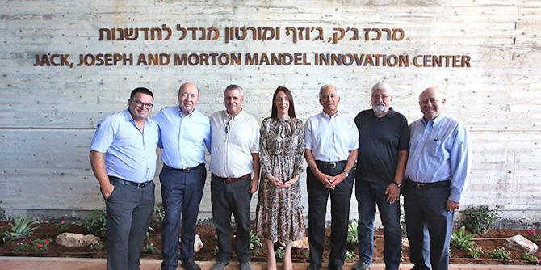

בנוכחות נשיא קרן מנדל,
פרופ' יהודה ריינהרץ, יו"ר הקרן
סטיב הופמן, מנכ"ל קרן מנדל-ישראל,
משה ויגדור, ראש מועצת ירוחם, גב' טל אוחנה, ויו"ר קרן ירוחם החדשה
עמרם מצנע, נחנך בניין מרכז ג'ק, ג'וזף ומורטון מנדל לחדשנות בירוחם.

MindCET, מייסודו של המרכז לטכנולוגיה חינוכית, הוא מרכז חדשנות בתחום החינוך המפגיש בין יזמים, מחנכים, סטודנטים וחוקרים, במטרה לחקור, לחזק ולפתח פתרונות פדגוגיים חדשניים ורלוונטיים. המרכז משתף פעולה עם ארגונים דומים, אוניברסיטאות מרכזיות וחברות הייטק, וכולל חמישה מתקנים:
HUB – סביבת עבודה פתוחה המארחת קבוצות פעילות של MindCET, ותומכת בשיתופי פעולה ייחודיים בין יזמים, חוקרים, מורים ותלמידים. המקום יהיה פתוח גם לחיילים ולקצינים מקמפוס ההדרכה החדש של צה"ל ולעובדי היי-טק מהנגב כולו.
ארגז החול – מקום לתצוגה ולניסיון מעשי של טכנולוגיות פורצות דרך בתחום הטכנולוגיה בחינוך. המקום מיועד לסדנאות וללימוד עצמאי למורים, לחיילים ולאנשי טכנולוגיה.
Fab lab – מעבדת מֵייקרים המשלבת בית מלאכה מסורתי עם תכנות, הדפסת תלת-ממד וחיתוך לייזר, ומאפשרת לתלמידים, למורים וליזמים ליצור כמעט כל דבר שיעלו על דעתם. המעבדה תשרת קבוצות מקמפוס ההדרכה של צה"ל ובני נוער מירוחם ומהפזורה הבדואית הקרובה.
הכיתה המעופפת – כיתה המיועדת לניסויי מחקר, הכוללת עזרים טכנולוגיים שיסייעו לחוקרים (כלי הקלטה ותיעוד מובנים, חלון תצפית חד-כיווני, חיישנים ונקודות תצפית).
אגף מחקר – ובו כיתות לימוד ואולם, לשימוש הקבוצות השונות שישתתפו בפעילות של MindCET וכן לכנסים והשתלמויות לצוותים של בתי ספר, מעצבי דעת קהל, עמיתים ובוגרים של בית ספר מנדל למנהיגות חינוכית ולדרגי הפיקוד של קמפוס ההדרכה של צה"ל.
כמו כן יקייםMindCET מדי שנה פורום בינלאומי לטכנולוגיה חינוכית ע"ש מורטון ל' מנדל, בארץ או בחו"ל.

"נוסף על העניין של קרן מנדל בישראל בכלל, יש לנו עניין מיוחד בנגב", אמר בטקס נשיא קרן מנדל, פרופ' יהודה ריינהרץ. "אין זה מקרה שהבניין הזה נמצא בירוחם, אבל הבניין הוא לא העיקר, אלא ההצהרה שיוצאת ממנו, והיא שאנחנו כאן כדי להישאר".
יוסי בידץ, מנכ"ל מט"ח, הודה למר מנדל: "אנחנו רוצים להודות לו מעומק לבנו על החזון שלו, על נדיבותו ועל אמונו האינסופי בתהליך השאפתני שלנו".
{kind=link}
{kind=link}